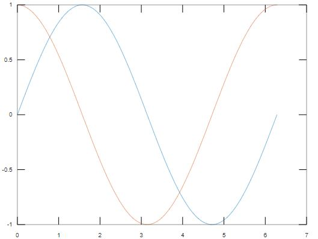

Plotting Data
MATLAB provides sufficient tools for plotting data. The simplest plot that we can make is just to plot a series of data. Let's do it on the example of the Fibonacci sequence. Fibonacci numbers are obtained by adding 2 previous numbers. So here are the first 8 values of the Fibonacci sequence.
y = [1, 1, 2, 3, 5, 8, 13, 21];
To plot it, all we need to do is call a function called plot and pass in our vector y:
plot(y)
Here you can see the x range is set automatically. Instead, we can define this range ourselves. For example, suppose we want x to increase by 0.1 every time.
x = [0 0.1 0.2 0.3 0.4 0.5 0.6 0.7];
So now we can define our 2d plot.
plot(x,y)
You can see that y axis is the same as before, but x axis is our predefined range. Note that the size of both x and y have to be equal.
size(x)size(y)
So, if we do something like this
plot([1 2 2], y), it's not going to work.
plot([1 2 2], y)
error: __plt2vv__: vector lengths must match
error: called from
__plt__>__plt2vv__ at line 487 column 5
__plt__>__plt2__ at line 247 column 14
__plt__ at line 112 column 18
plot at line 229 column 10
Line Graph
The next thing that we are going to do is a bit more complex, we are going to plot a function. One of the most useful functions that we need to learn is linspace. Linspace creates the range of values, so we pass in where we want it to start, where we want it to end, and how many points will be in between. So we are saying x is going to go from 0 to 100 and have 200 points in between.
x = linspace(0,100,200);
Now to calculate y all we have to do is for example to use the sine function.
y = sin(x);plot(x,y)
One thing you might notice about this graph is that the lines are pretty jagged, it's not a smooth graph but sine x is actually a smooth graph. The reason why that is if we look at x again,
x
there are 200 points for a range of 100, so, that's a very low resolution. To increase it we either can reduce the range or put more points in between or both. So, let's recreate x.
x = linspace(0, 2*pi, 100);y = sin(x);plot(x,y);
So now we can see that it's a lot smoother.
Now let's look at how to plot two functions on the same plot. That might be useful to compare 2 different series, so let's create the second function.
y2 = cos(x);
If we type in just plot, we can see some different function signatures for the plot. If you look closer, you will find that it shows us that for every pair X and Y we want to plot, we just pass them in adjacent to each other. So in our case, we are going to have x and y, and since it is the same x for both y and y2, we are going to pass in x again.
plot(x, y, x, y2);

So, now we can see the sine x in blue color and cosine x in orange color on the same plot. We can make our plot a little fancier by specifying a line color and line style.
plot(x, y,'b--',x ,y2, 'g.');
So those are also passed in adjacent to the x and y. Now it's even easier to differentiate between those two lines. So the cosine graph is a bunch of green dots and the sine graph is a blue dashed line.
Line Graph with Error Bars
Error bar can be used to show the range of error at each point.
x = 1:10:100;y = rand(1,10)*100;err = [2 8 10 4 5 6 3 9 2 7];errorbar(x,y,err)
Bar Chart
Those were the default type of plots, there are other types as well. Like a bar plot. Let's see a simple example.
x = 1:10
And we want to plot this on a bar chart, so, we call the method bar, pass in x.
bar(x)
These does pretty much the exact same thing as the plot function except instead of connecting them all in a line, it divides them into their own individual bar. So just for reference, let's do a sine example again.
x = linspace(0, 2*pi, 100);y = sin(x);bar(x,y);
So this is a bar chart of the sine function.
Histogram
The next useful plot is the histogram. If you have studied probability, you should be familiar with it. So with a given data set we might want to figure out what kind of distribution does it follow. Let's generate some data where we want to know the distribution. Like a thousand points that are normally distributed.
x = rand(1000,1)plot(x);
If we plot this, it does not do much it just looks like noise, so we are not able to make much sense from that. What we want to do is to call a function called hist.
hist(x);
So we can see that it's pretty much normally distributed. The resolution for this chart is not that great, we can change it by setting the number of bins, let's say 50.
hist(x,50);
And this gives us a much more granular representation of the data.
Pie Chart
Another plot type is a pie chart, which you probably have used in excel and powerpoint. Let's say x is 1 to 5.
x = 1:5;
Then, we call a function, called pie, pass in data and add a title for the chart.
pie(x);title("Example of a Pie Chart")
And it automatically splits up the data so that purple is the first element, blue is the second element, and so on. There are ways to label them to make your visualization more comprehensible. We will not do that now, you can check MATLAB documentation for that later.
Scatter Plot
Another useful plot that we are going to see is the scatter plot. It is very useful and widely used in data analysis. Let's return to our sine example.
x = linspace(0, 2*pi, 1000);
Now we are going to do something a little different, we are going to set it.
y = 10 * sin(x) + rand(1,1000);
So that the sine x has an amplitude of 10 and then we are going to add some random noise with variance 1. The reason to scale it by 10 is to make the sine wave is bigger compared to the noise. Otherwise, the noise will just take over the shape of the sine wave. Now if we are going to plot x and y, we would just get a noisy sine wave.
plot(x,y);
If we do it in a scatter plot, we can see the pattern pretty much the same, it does not seem to make much differences.
scatter(x,y)
But in our case, the data was pretty ordered. Now suppose that our data is not ordered. So instead of linspace, our x will be just a bunch of random points.
x = rand(1000,1) * 2;
So, x is normally distributed with a standard deviation of 2. And y is going to be let's say:
y = 5 * sin(x) + rand(1000,1);
If we plot x and y now, we don't really see anything.
plot(x,y);
But scattering plots all the dots individually.
scatter(x,y);
So now we can very clearly see the sine wave that we are supposed to see. So if you are doing data analysis and your points are not ordered you probably would want to use a scatter plot.
3D Plot
Beside 2D graphs, we can even plot things in 3D. Let's try to create a simple 3D line graph with the grid lines.
m = 1:5;plot3(m,m,m);grid on
Let's make something interesting.
t = linspace(0,20,1000);x = exp(t./10).*sin(15*t);y = exp(t./10).*cos(15*t);plot3(x,y,y);grid on